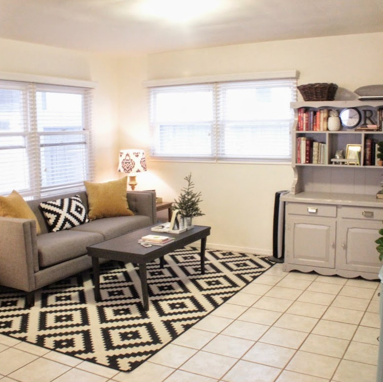
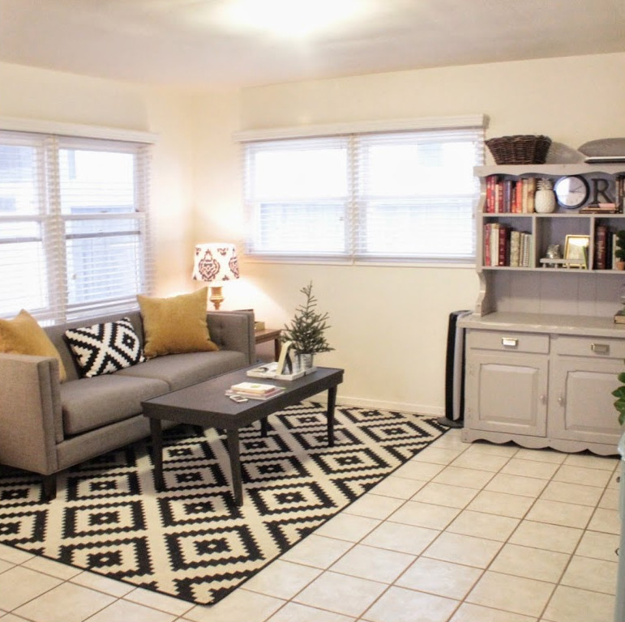

Laboratorio di TNDS – Lezione 2
Maurizio Tomasi
Martedì 11 Ottobre 2022
Esercizi
Lo scopo della lezione di oggi è introdurre il concetto di
«classe», che è un tipo di dato complesso del linguaggio C++, creando
una classe Vettore che implementa un array «intelligente»
di valori double.
Esercizio
2.0: creazione della classe Vettore.
Esercizio
2.1 (da consegnare per l’esame scritto): è lo stesso tipo di
esercizio della scorsa lezione, ma ora occorre usare la classe
Vettore dell’esercizio 2.0.
Verificate il vostro codice!
N = 100000:
- Mean : 30.23231
- Variance : 282326.76577 (corrected: 282329.58906)
- Standard deviation : 531.34430 (corrected: 531.34696)
- Median : 12.74255
N = 10:
- Mean : 13.91472
- Variance : 38.73156 (corrected: 43.03507)
- Standard deviation : 6.22347 (corrected: 6.56011)
- Median : 10.58911
N = 9:
- Mean : 13.85262
- Variance : 42.99651 (corrected: 48.37107)
- Standard deviation : 6.55717 (corrected: 6.95493)
- Median : 9.55072
Verifica della correttezza dei codici
Quando si scrive un programma, è indispensabile verificare che
funzioni.
La scorsa settimana vi avevo fornito i risultati attesi, che
avete (spero!) confrontato con l’output dei vostri
programmi.
Ma se nelle prossime settimane deciderete di mettere mano ai
vecchi esercizi per migliorarli, dovrete ricontrollare da capo i
numeri!
Non sarebbe meglio se fosse il calcolatore a fare questi
controlli per voi?
Un semplice esempio
#include <iostream>
int calc(int a, int b) { return a + b; }
int main() {
std::cout << "Inserisci due numeri: ";
int a, b;
std::cin >> a >> b;
std::cout << "Il risultato è " << calc(a, b) << "\n";
return 0;
}
Un semplice esempio
Per verificare la correttezza del codice, si può eseguire alcune
volte il programma.
$ g++ test1.cpp -o test1
$ ./test1
Insert two numbers: 4 6
The result is 10
$ ./test1
Insert two numbers: -1 3
The result is 2
$
Il conto però, come abbiamo visto, va verificato a mano ogni
volta.
Test automatici
Il resto del codice resta uguale, ma nel main si
deve invocare test_sum() prima di ogni altra cosa:
int main(int argc, char *argv[]) {
// This must be the very first thing!
test_sum();
// Now implement the exercise as requested
…
}
Potete implementare più funzioni test_*(), che poi
chiamerete una di seguito all’altra nel main.
Test automatici
Se c’è un errore, il programma si blocca con un messaggio:
$ ./test2
test2.cpp:4:void test_sum():
Assertion `sum(-1,3) == 2' failed
Aborted (core dumped)
$
Avvertenza: questo output si ottiene solo se
avete implementato il suggerimento
della scorsa lezione e usate il flag -g nel
Makefile.
Test automatici
È sempre buona cosa inserire all’inizio del main una
serie di test che verifichino il funzionamento corretto delle funzioni
implementate.
Il main dei vostri prossimi esercizi sembrerà
questo:
int main(int argc, char *argv[]) {
// Put the tests of the functions you're going to use
test_bisection();
test_simpson_integral();
test_random_generator();
test_hit_or_miss();
…
}
In questa e nelle lezioni successive vi fornirò una serie di
comandi assert da inserire nei vostri codici: vi aiuteranno
a verificare che l’esercizio sia corretto.
Test sui floating-point
Se provate a scrivere dei test per gli esercizi di queste prime
lezioni, vi imbatterete però in un problema legato ai numeri
floating-point.
Considerate il risultato atteso per la varianza nel caso
N = 100000, che è 282326.76577. Se avete usato
std::cout << per stampare la varianza, avete
probabilmente ottenuto 282327 (risultato
arrotondato).
Non si può in questo caso scrivere un test per la varianza fatto
così:
assert(CalcolaVarianza(mydata, 100_000) == 282326.76577)
perché al minimo errore di arrotondamento l’uguaglianza
fallisce.
Esercizio 1.1: assert
// Return true if `calculated` and `expected` differ by less than `epsilon`
bool are_close(double calculated, double expected, double epsilon = 1e-7) {
return fabs(calculated - expected) < epsilon;
}
void test_statistical_functions(void) {
double mydata[] = {1, 2, 3, 4}; // Use these instead of data.dat
assert(are_close(CalcolaMedia(mydata, 4), 2.5));
assert(are_close(CalcolaVarianza(mydata, 4), 1.25));
assert(are_close(CalcolaMediana(mydata, 4), 2.5)); // Even
assert(are_close(CalcolaMediana(mydata, 3), 2)); // Odd
// Continue from here …
}
Questi assert vanno bene anche per gli esercizi di oggi,
con opportuni aggiustamenti (es., usare Vettore anziché
double *).
Esempio di output
Se avete sbagliato ad implementare una delle funzioni, questo è
quello che accade quando eseguite il programma:
$ make
esercizio01.1: esercizio01.1.cpp:53: int main(): ↲
Assertion `are_close(CalcolaMediana(mydata, num), 2.5)' failed.
Aborted (core dumped)
$
Anche quando avete verificato che gli assert passano
con successo, lasciateli al loro posto: nel caso in cui in futuro
dobbiate modificare l’implementazione delle funzioni (ad esempio per
renderla più veloce), continueranno a fungere da controllo.
Assert negli esercizi
Le liste di assert che vi fornisco sono state
costruite anno dopo anno, alla luce degli errori che solitamente hanno
fatto i vostri precedenti colleghi nei loro esercizi.
Non presentatevi all’esame finché non riuscite a far passare
tutti gli assert di tutti
gli esercizi!
Molte volte degli studenti hanno presentato uno scritto in cui
avevano usato librerie con errori! E quasi sempre ritrovavo commenti del
genere negli esercizi che consegnavano:
// Siccome non riuscivo a far passare i test, ho commentato gli assert.
Implementazione di Vettore
Uso di operator[]
Se si ritorna un reference, è possibile anche fare
assegnamenti:
// !
double & Vettore::operator[](int index) {
assert(index >= 0 && index < m_size);
return m_arr[index];
}
Così il programma seguente diventa legale:
Vettore v(2);
v[0] = 162.3; // Assignment, works thanks to the reference
v[1] = 431.7; // Ditto
std::cout << v[1] << endl; // Print 431.7
#pragma once
I recenti compilatori C++, incluso il g++,
permettono un’alternativa più semplice alle header
guards.
La seguente scrittura è più agile e mette al riparo da
errori:
#pragma once // Questo file sarà incluso una volta sola
class Vettore {
// ...
};
È più comoda perché si deve aggiungere una sola riga senza dover
inventare un identificatore (__VETTORE_H__).
Costruttori, move semantics, etc.
«Costruzione» di una variabile
«Costruzione» di Vettore
Le classi, a differenza di int, richiedono
l’invocazione di un costruttore.
Il costruttore va invocato quando si dichiara la variabile: non è
possibile «differire» l’inizializzazione:
int x;
x = 15; // Ok: first allocate, then initialize
Vettore v;
v(10); // Error, you cannot call the constructor here!
Vettore w(10); // Ok: allocate, then initialize
I costruttori possono richiedere molto tempo per essere eseguiti,
ad esempio se al loro interno invocano new (com’è il caso
di Vettore).
Analogia
 

Immaginiamo che una variabile sia come un appartamento. Una volta
allocata, è come quando gli imbianchini e i piastrellisti hanno appena
terminato il lavoro. Quando poi viene chiamato il costruttore della
variabile, è come se la casa venisse arredata.
Costruttori

Vettore::Vettore(int n) : m_N(n) {
m_v = new double[m_N]; // Allocate (build up the building)
for(int i = 0; i < m_N; ++i) // Initialize (add the furniture)
m_v[i] = 0.0;
}
Costruttori di copia

Un copy constructor corrisponde all’azione di costruire una
stanza vuota identica alla prima (ossia, di tipo Vettore),
e riempirla con gli stessi identici mobili (ossia, assegnando lo stesso
valore a m_N e agli elementi di m_v).
Costruttori di copia

Vettore::Vettore(const Vettore &vett) : m_N(vett.m_N) {
m_v = new double[m_N]; // Allocate (build up the building)
for(int i = 0; i < m_N; ++i) // Initialize (add a copy of the furniture
m_v[i] = vett.m_v[i]; // that was used in the old building)
}
Operazione di assegnamento

Con una operazione di assegnamento (operator=), abbiamo
due stanze già arredate (variabili già inizializzate), che vogliamo
rendere identiche. Dobbiamo quindi prima svuotare la stanza di
destinazione perché è piena, e solo dopo arredarla allo stesso modo
dell’altra.
Operazione di assegnamento

Vettore & Vettore::operator=(const Vettore &vett) {
m_N = vett.m_N;
if(m_v) delete[] m_v; // Put the old building in the garbage!
m_v = new double[m_N]; // Create a new building
for(int i = 0; i < m_N; ++i) { // Fill the rooms with a copy of the
m_v[i] = vett.m_v[i]; // old furniture
}
}
Operazione di assegnamento

Vettore v1(10), v2(30);
// …here I initialize v1 and v2, and I use them for some time.
v1 = v2; // Assignment through Vettore::operator=
Move constructor

Il move constructor è stato introdotto nel C++11, e
corrisponde a un trasloco: ho una stanza già arredata e
una vuota, e voglio spostare i mobili dalla prima alla seconda, senza
comprarne di nuovi!
Move constructor

Vettore::Vettore(Vettore && vett) : m_n(vett.m_N) {
// No need for "delete vett.m_v": I want to keep the old furniture!
m_v = vett.m_v; // No need to call "new": very fast!
// No "for" loop to copy the elements: very fast!
}
Move constructor

// Function "Read" creates a Vector and fill it with data read from file
Vettore Read(int ndata, const char * filename) {
Vettore result(ndata);
// …
return result;
}
Vettore v = Read(ndata, filename);
Distinguere tra i casi
Vettore v1(10); // Constructor
Vettore v2(v1); // Copy constructor
Vettore v3 = v1; // Copy constructor
v3 = v1; // Assignment
Vettore v4 = Read(10, "data.dat"); // Move constructor
// (at the end of the call to "Read")